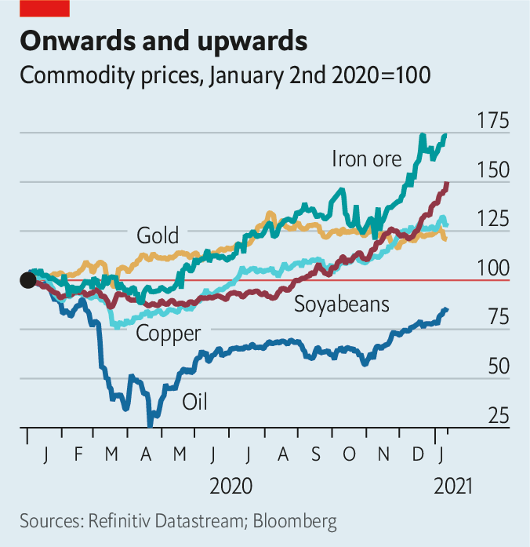

2021-01-27T15:00:02+00:00
大宗商品跃升
登山客
大宗商品价格正在攀升。新的超级周期开始了吗？
大宗商品在2020年最重大的事件就是走下坡。随着新冠疫情中止了人们出行，油价跳崖，一度跌穿地面：4月，西德克萨斯中质油（WTI）的期货合约降为负值。11月，受对疫苗的乐观情绪支撑，油价开始爬升至每桶超过45美元。然而对其他大宗商品而言，2020年并不全然是糟糕的一年。事实上，这一年可能标志着一轮非凡上行的开始。
去年8月，金价首次突破每盎司2000美元，因为低利率增加了这种贵金属的吸引力。其他大宗商品的价格也上升了，不是仅仅从4月疫情封锁期间的低谷回弹而已，还高过了2020年初全球疫情尚未爆发时的水平（见图表）。花旗集团估计，去年12月，资产管理者持有的大宗商品资产达到创纪录的6400亿美元，年收益接近25%。到1月11日，即使是以石油为主的标普高盛商品指数也回升到了一年前的水平。目前的争论是油价多快会恢复，以及其他大宗商品价格可能飙升到多高。

而这取决于在2020年推高了某些大宗商品的力量在2021年是否会继续，或者甚至被更强大的增长引擎取代。去年，中国增加投资并补充战略储备，成为“大胃王”进口国。受益的部门包括在钢铁和电力项目中用到的铁矿石和铜，以及小麦、大豆和猪肉等软商品。与此同时供给受限。疫情爆发致使巴西部分铁矿关闭。太平洋温度大规模下降的拉尼娜现象导致南美洲降雨稀少，进而推高了粮食价格。
今年以来已经出现了供给受限的迹象。1月11日，阿根廷取消了玉米出口禁令，但设定了出口上限。俄罗斯计划从2月中旬开始对小麦出口征税。低供应量加上严寒使得亚洲的液化天然气价格创下历史新高，每百万英国热量单位远超过20美元。大型煤矿仍然面临生产受限的风险，例如在秘鲁拉斯邦巴斯铜矿发生的抗议活动引发了人们对生产中断的担忧。
与此同时，石油继续试探复苏之路，时而受疫苗带来的希望鼓舞，时而又因最新的封锁消息受挫。为了提振油价，沙特阿拉伯已表示将在2月和3月每日额外减产100万桶。
有两个重要的动向或许能提供进一步的支持。疫苗在全球最大的那些经济体的推广最终将激发出更高的出行和贸易水平。美国民主党政府的巨额支出法案，加上美联储持续的宽松货币政策，也将刺激经济活动，进而刺激大宗商品的消费。这可能还会削弱美元，使得石油和其他以美元计价的大宗商品对新兴市场的买家变得更便宜，从而提振需求，把大宗商品价格继续推高。
以高盛银行的杰夫·库里（Jeff Currie）为首的人士看涨大宗商品，他们认为，更长期的趋势将在未来十年支撑价格。库里称，“这场疫情本身是对一个大宗商品超级周期的结构性催化剂。”除了美元走软和随之而来的大宗商品受提振之外，疫情可能还有助于让某些全球最大经济体一致行动。
美国、中国和欧洲的政府都宣称支持绿色投资以及缩小收入差距的努力。库里指出，对贫困家庭的援助对消费的影响尤其大，这继而会支撑大宗商品的价格。而对充电站和风力发电场等项目的绿色投资也十分依赖大宗商品。绿色支出在初期阶段甚至可能会通过促进就业和经济活动来提振对石油的需求。高盛估计，未来两年两万亿美元的刺激计划将使美国的石油需求每天增加约20万桶，相当于增加1%。
怀疑论者预计增长要更疲软些。花旗集团的埃德·莫尔斯（Ed Morse）指出，短期内，投资者对铜的押注并不受供给和消费的趋势支撑。民主党在参议院仅勉强获得多数席位，难以保证总统拜登的气候计划会获得通过。莫尔斯表示，“在需求这一端没有哪一块的大宗商品密集度能和21世纪头十年勉强一比。”
先前那个超级周期受到一系列因素的推动：城市化、投资、新兴市场中产阶级的崛起，以及更突出的因素——中国。从柏林到北京，各国政府现在都宣称要实现一种新型的转变。未来十年的大宗商品价格在很大程度上将取决于它们是否言行一致。
2021-01-27T15:00:02+00:00
Surging commodities
The mountaineers
Commodity prices are climbing. Is a new supercycle beginning?
THE BIGGEST commodity story of 2020 was one of decline. As the coronavirus pandemic halted travel, oil prices fell off a cliff, then briefly went subterranean: in April a futures contract for West Texas Intermediate was worth less than nothing. Oil began clawing its way above $45 a barrel in November, supported by optimism about vaccines. For other commodities, however, 2020 was not all bad. Indeed the year may have marked the start of an extraordinary ascent.
In August gold passed $2,000 an ounce for the first time ever, as low interest rates made the precious metal more attractive. The value of other commodities rose, too, not just from the depths of virus-induced lockdowns in April but from the start of 2020, before the pandemic began (see chart). Commodity assets under management reached a record $640bn in December, estimates Citigroup, a bank, representing an annual gain of nearly a quarter. By January 11th even the oil-heavy S&PGSCI commodity index had reached the level of a year ago. The debate now is how quickly oil prices will recover, and how high other commodities may soar.
That in turn depends on whether the forces that pushed up certain commodities in 2020 will continue in 2021, or indeed be supplanted by even more powerful engines of growth. Last year China proved a voracious importer as it increased investment and filled strategic stockpiles. Beneficiaries included iron ore and copper, used in steel and electricity projects, as well as soft commodities such as wheat, soyabeans and pork. This coincided with restrained supply. Outbreaks of covid-19 prompted the closure of some iron-ore mines in Brazil. Scant rain in South America, caused by La Niña, a large-scale cooling of Pacific Ocean temperatures, raised grain prices.
This year has already presented signs of limited supply. On January 11th Argentina lifted a ban on corn exports, but imposed a cap. Russia plans to tax wheat exports from mid-February. Low supply and cold weather have powered Asian prices of liquefied natural gas to a record high of well over $20 per million British thermal units. Big mines still face risks of restrictions. Protests at Las Bambas copper mine in Peru, for instance, have stoked fears of disruptions.
Meanwhile oil has continued its tentative recovery, alternately inflated by hopes for vaccines and depressed by news of lockdowns. To boost prices, Saudi Arabia has said it will limit output by a further 1m barrels a day in February and March.
Two important developments may provide further support. The roll-out of vaccines across the world’s largest economies will eventually inspire higher levels of travel and trade. And a big spending bill by a Democratic American government, together with continued loose monetary policy from the Federal Reserve, would stimulate economic activity and therefore commodity consumption. That might also weaken the dollar, which would make oil and other commodities denominated in dollars cheaper for buyers in emerging markets, lifting demand and pushing commodity prices even higher.
Commodity bulls, led by Jeff Currie of Goldman Sachs, a bank, argue that longer-term trends will support prices through the coming decade. “The pandemic itself is a structural catalyst for a commodity supercycle,” Mr Currie contends. In addition to a weaker dollar and the accompanying boost for commodities, the pandemic may help synchronise activity across some of the world’s biggest economies.
Governments in America, China and Europe profess to champion green investment and efforts to narrow gaps in income. Assistance for poor households has an outsize effect on consumption, Mr Currie points out, which in turn supports commodity prices. And green investment—in electric-charging stations, for instance, and wind farms—is commodity-intensive. The early years of green spending may even lift oil demand, by boosting employment and economic activity. Goldman estimates that a $2trn stimulus over the next two years would raise American oil demand by about 200,000 barrels a day, or 1%.
Sceptics expect more muted growth. In the short term, Ed Morse of Citigroup points out, investors’ bets on copper are not supported by trends in supply and consumption. The Democrats’ slim majority in the Senate hardly guarantees that president Joe Biden’s climate plan will be passed. “There is nothing on the demand side that is nearly as commodity-intensive as the first decade of the 21st century,” says Mr Morse.
That earlier supercycle was driven by urbanisation, investment and an ascendant middle class in emerging markets—and China, in particular. Governments from Berlin to Beijing now declare that they intend to bring a new type of transformation. The price of commodities in the coming decade depends in large part on whether they do what they say. ■
2021-01-27T15:00:02+00:00
大宗商品躍升
登山客
大宗商品價格正在攀升。新的超級周期開始了嗎？
大宗商品在2020年最重大的事件就是走下坡。隨着新冠疫情中止了人們出行，油價跳崖，一度跌穿地面：4月，西德克薩斯中質油（WTI）的期貨合約降為負值。11月，受對疫苗的樂觀情緒支撐，油價開始爬升至每桶超過45美元。然而對其他大宗商品而言，2020年並不全然是糟糕的一年。事實上，這一年可能標誌着一輪非凡上行的開始。
去年8月，金價首次突破每盎司2000美元，因為低利率增加了這種貴金屬的吸引力。其他大宗商品的價格也上升了，不是僅僅從4月疫情封鎖期間的低谷回彈而已，還高過了2020年初全球疫情尚未爆發時的水平（見圖表）。花旗集團估計，去年12月，資產管理者持有的大宗商品資產達到創紀錄的6400億美元，年收益接近25%。到1月11日，即使是以石油為主的標普高盛商品指數也回升到了一年前的水平。目前的爭論是油價多快會恢復，以及其他大宗商品價格可能飆升到多高。
而這取決於在2020年推高了某些大宗商品的力量在2021年是否會繼續，或者甚至被更強大的增長引擎取代。去年，中國增加投資並補充戰略儲備，成為“大胃王”進口國。受益的部門包括在鋼鐵和電力項目中用到的鐵礦石和銅，以及小麥、大豆和豬肉等軟商品。與此同時供給受限。疫情爆發致使巴西部分鐵礦關閉。太平洋溫度大規模下降的拉尼娜現象導致南美洲降雨稀少，進而推高了糧食價格。
今年以來已經出現了供給受限的跡象。1月11日，阿根廷取消了玉米出口禁令，但設定了出口上限。俄羅斯計劃從2月中旬開始對小麥出口徵稅。低供應量加上嚴寒使得亞洲的液化天然氣價格創下歷史新高，每百萬英國熱量單位遠超過20美元。大型煤礦仍然面臨生產受限的風險，例如在秘魯拉斯邦巴斯銅礦發生的抗議活動引發了人們對生產中斷的擔憂。
與此同時，石油繼續試探復蘇之路，時而受疫苗帶來的希望鼓舞，時而又因最新的封鎖消息受挫。為了提振油價，沙特阿拉伯已表示將在2月和3月每日額外減產100萬桶。
有兩個重要的動向或許能提供進一步的支持。疫苗在全球最大的那些經濟體的推廣最終將激發出更高的出行和貿易水平。美國民主黨政府的巨額支出法案，加上美聯儲持續的寬鬆貨幣政策，也將刺激經濟活動，進而刺激大宗商品的消費。這可能還會削弱美元，使得石油和其他以美元計價的大宗商品對新興市場的買家變得更便宜，從而提振需求，把大宗商品價格繼續推高。
以高盛銀行的傑夫·庫里（Jeff Currie）為首的人士看漲大宗商品，他們認為，更長期的趨勢將在未來十年支撐價格。庫里稱，“這場疫情本身是對一個大宗商品超級周期的結構性催化劑。”除了美元走軟和隨之而來的大宗商品受提振之外，疫情可能還有助於讓某些全球最大經濟體一致行動。
美國、中國和歐洲的政府都宣稱支持綠色投資以及縮小收入差距的努力。庫里指出，對貧困家庭的援助對消費的影響尤其大，這繼而會支撐大宗商品的價格。而對充電站和風力發電場等項目的綠色投資也十分依賴大宗商品。綠色支出在初期階段甚至可能會通過促進就業和經濟活動來提振對石油的需求。高盛估計，未來兩年兩萬億美元的刺激計劃將使美國的石油需求每天增加約20萬桶，相當於增加1%。
懷疑論者預計增長要更疲軟些。花旗集團的埃德·莫爾斯（Ed Morse）指出，短期內，投資者對銅的押注並不受供給和消費的趨勢支撐。民主黨在參議院僅勉強獲得多數席位，難以保證總統拜登的氣候計劃會獲得通過。莫爾斯表示，“在需求這一端沒有哪一塊的大宗商品密集度能和21世紀頭十年勉強一比。”
先前那個超級周期受到一系列因素的推動：城市化、投資、新興市場中產階級的崛起，以及更突出的因素——中國。從柏林到北京，各國政府現在都宣稱要實現一種新型的轉變。未來十年的大宗商品價格在很大程度上將取決於它們是否言行一致。